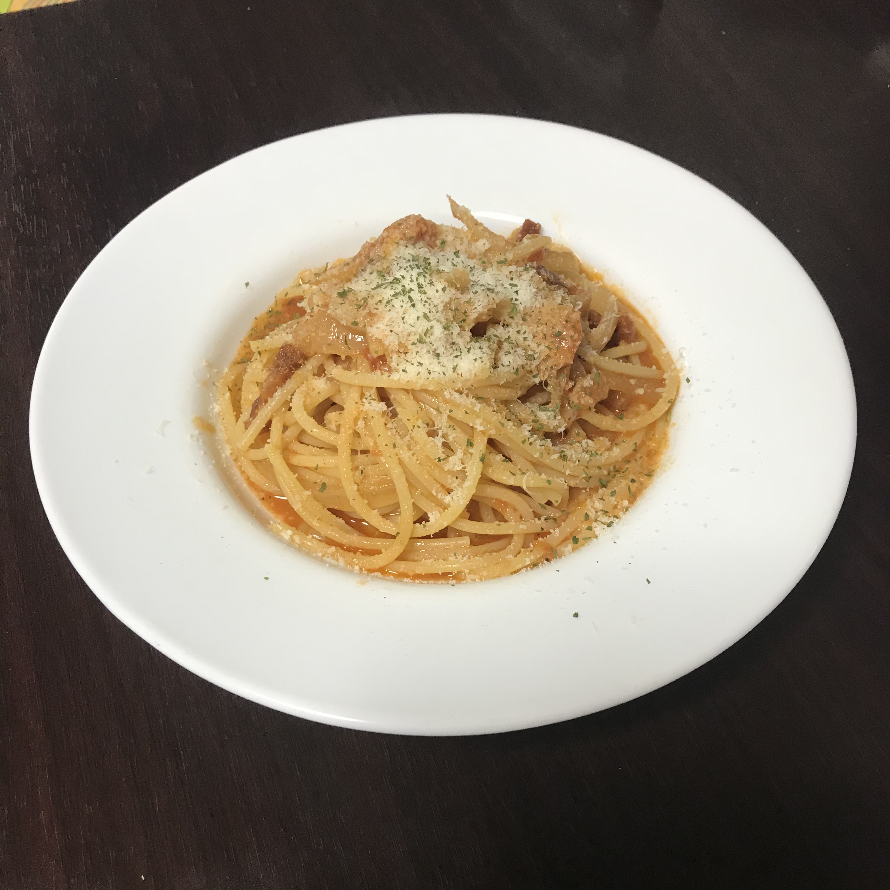

Date: 2020.05.26 (Thu)
アマトリチャーナ

今日の料理について
アマトリチャーナはトマトベースにペコリーノ・ロマーノが入ったパスタ。
ペコリーノ・ロマーノは羊のチーズです。
このチーズは酸味と香りの独特な主張が強いので
慣れていなければパルミジャーノ・レッジャーノを混ぜて好みの味に調整すると
親しみやすく食べれると思います。
感想
塩気が入りすぎてトマトの味が負けてしまった。
しばらく作っていなかったので、塩気の感が鈍っていた。
ペコリーノの強い酸味と刺激的な香りがとても心地いい。
私はちょっとだけパルミジャーノのコクが入っているのが好みで、いつもブレンドする。
パンチェッタをカリカリになるように火を入れて、風味を引き出すけれど、
たまにはジューシーな食感を残すのも試してみたい。
塩気が入りすぎるのは私がたまにやってしまうミスの1パターン。次は気をつける。
材料
- パスタ(ディチェコ 1.7mm スパゲッティー): 70g
- 水: 1L
- 塩: 15g
- ペコリーノ・ロマーノ: 8g
- パルミジャーノ・レッジャーノ: 2g
- にんにく: 1片
- たまねぎ: 1/4個
- パンチェッタ: 5g
- オリーブオイル: 大さじ1
- トマト缶: 80g
手順
ソース
- にんにくはスライスに、 玉ねぎは串切り、パンチェッタは串切りにカット。
- 加熱前のフライパンににんにくとパンチェッタとオリーブオイルを入れて弱火で加熱。
- 香りが出てきたら玉ねぎを加えて、塩をひとつまみ加えて炒める。
- 玉ねぎがしんなりしてきたら、トマト缶を加えて煮つめる。
-
沸騰し始めたらパスタの茹で汁を加えて混ぜて、好みの塩気になるように煮つめる。
今回はここで塩気が入りすぎた。トマトの果実味を負かさないように注意。
パスタ
- 水1Lに塩15gを加えて沸騰させる。
- 沸騰し始めたらパスタを加える。
-
規定の時間より1分少ない時間を目安に茹でる。
茹でる際はパスタが動かないくらいの沸騰に止め、
途中で１回ほどパスタをほぐす。
仕上げ
- ソースを温めてから火を消す。
- ソースにパスタを加え、すりおろしたチーズを7割ほど加えて、よく和える。
- お皿に盛りつけ、残りのチーズとパセリを上からかけて、完成。